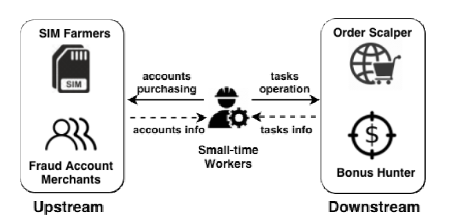
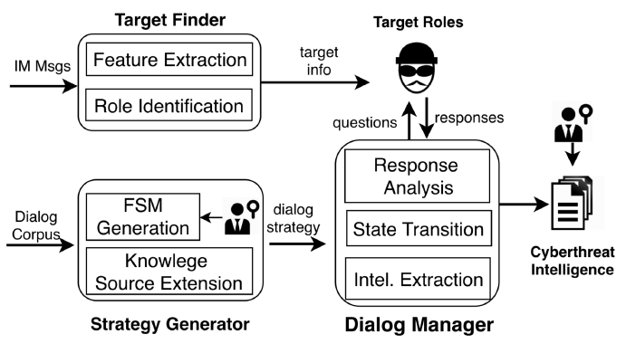
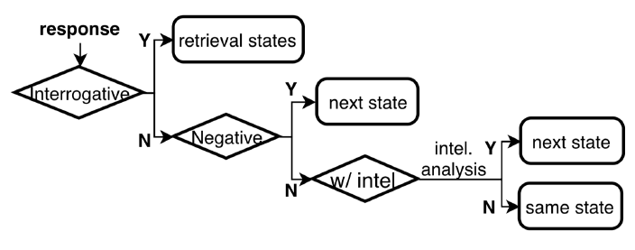
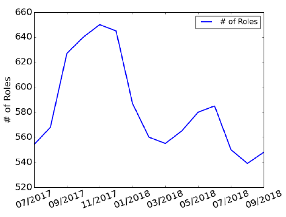
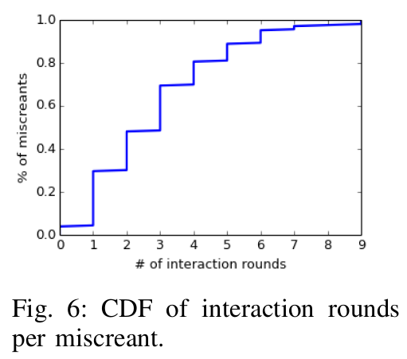
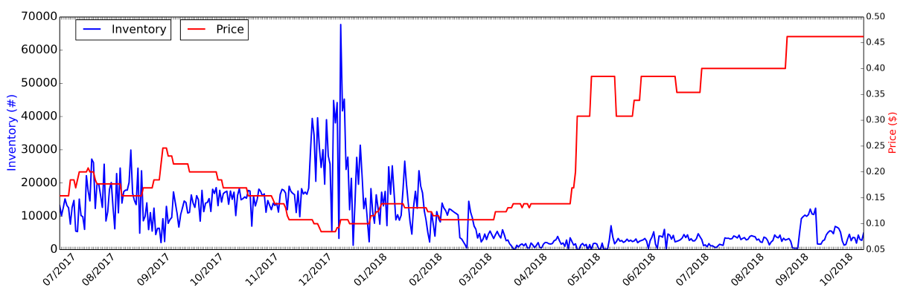

Peng Wang, Xiaojing Liao, Yue Qin, XiaoFeng Wang Indiana University Bloomington fpw7, xliao, qinyue, xw7g@indiana.edu
Abstract
E-commerce miscreants（电子商务罪犯） heavily rely on instant messaging (IM) to promote their illicit businesses（促进其非法生意） and coordinate their operations. The threat intelligence（威胁情报） provided by IM communication, therefore, becomes invaluable（无价的） for understanding and mitigating（缓解） the threats of e-commerce frauds（威胁）. However, such information is hard to obtain since it is usually shared only through one-on-one conversations with the criminals. In this paper, we present the first chatbot, called Aubrey, to actively collect such intelligence through autonomous chats（自动聊天） with realworld e-commerce miscreants. Our approach leverages（利用了） the question-driven conversation pattern of small-time workers, who seek jobs and/or attack resources from e-commerce fraudsters（骗子）, to model the interaction process as a finite state machine（将交互过程建模为有限状态机）, thereby（从而） enabling（实现） an autonomous conversation. Aubrey successfully chatted with 470 real-world e-commerce miscreants and gathered a large amount of fraud-related artifacts（文物）, including previously-unknown（以前未知的） SIM gateways, account trading websites（账户交易网站）, and attack toolkits, etc. Further, the conversations revealed the supply chain of e-commerce fraudulent activities on the deep web and the complicated relations（复杂关系） (e.g., complicity and reselling（同谋和转售）) among miscreants.
I. INTRODUCTION
Every day, hundreds of thousands of individuals sit in front of computers and repeatedly purchase the same products (without paying) or write fake reviews (without purchasing) using different fake accounts, based upon the tasks they receive from the underground market, for purposes such as sale volume inflation（销量通货膨胀）, product ranking manipulation（产品排名操纵） [1][2] etc. Such e-commerce fraud（舞弊） activities are usually committed through underground crowdsourcing（众包。我第一次听说这个词语。在该模式下，个人或组织可以利用大量的网络用户来获取需要的服务和想法） [3] where miscreants（恶人） heavily rely on instant messaging (IM) to communicate with others and coordinate their activities [4]. Through IM-based social networks such as Telegram [5], QQ [6] etc., e-commerce miscreants advertise their attack toolkits and services using group chat, seek further collaborations and share purchase links via one-on-one interaction. As an example, to inflate one’s product sales volume（销量）, the merchant could order a scalping service（倒卖服务） 3 in which the service provider hires scalpers (i.e., small-time workers) organized through IM apps for fake massive purchases of the product. The communication traces for such underground operations are invaluable threat intelligence（威胁情报） for understanding e-commerce fraud. However, access to the intelligence is challenging, often requiring direct interactions with miscreants.
Challenges. IM communications carry important intelligence about e-commerce cybercrime, including its infrastructures（基础设施） (e.g., hosting services on the deep web) and resources (e.g., SIM card). To collect such intelligence, security analysts today typically infiltrate（渗透） IM groups to passively（被动） receive multicast messages（多播消息）. These messages, however, are often less valuable due to precautions（预防措施） taken by the miscreants. For example (see Section V), in our study, 323K fraud phone numbers are unearthed from the discovered SIM gateways (Section II), while only 7K phone numbers have shown up in the multicast IM group discussions. Such useful intelligence is actually only shared through one-on-one conversation with the miscreants, which requires human involvement. Also noteworthy is that the number of newly appeared e-commerce miscreants continuously grow with an increasing rate of 292 percent (see Section IV-B). One-on-one conversations by a human are difficult to manage from a cost-effectiveness standpoint（成本效益的角度）.
A natural solution is to automate the conversation with the miscreants using a chatting robot (chatbot). Although such techniques have been studied for decades [7][8][9][10], and several commercial chatbots are available [11][12], they cannot be directly applied to collect threat intelligence from cybercriminals. Having a convincing（令人信服的） conversation with online miscreants requires the understanding of crime-specific dialogues. More complicated is how to strategically lead the subjects to discuss various underground activities such as fake account purchase. Prior research shows that the chatbot designed for a specific domain or open conversation hardly works well in other domains [13]. So far, we are not aware of any autonomous conversation technique（自主对话技术） have been implemented for cybercriminals. This can only be done with a conversation strategy generation model for a specific criminal role（角色） and a targeted dialog manager guiding the chatbot through the conversation to effectively gather the targeted threat intelligence. These techniques have never been studied before.
Aubrey: autonomous chat with miscreants. In our research, we designed and implemented the first chatbot, called Aubrey (AUtonomous chatBot foR intelligencE discoverY), for active threat intelligence gathering from e-commerce fraudsters（骗子）(see Section II). Given the challenges in information collection from these cunning players, we leveraged（利用） a unique observation（独特视角） about the conversation patterns with them. Small-time workers need to seek resources (e.g., SIM cards) or jobs (e.g., order scalping) from underground IM groups, and their chats with fraudsters (e.g., resource sellers or job providers) are primarily question-driven and characterized by unique patterns: the worker asks a question (e.g., type of fraud accounts or tasks for order scalping) and expects an answer for resources (e.g., phone verified account) or jobs (e.g., products for scalping); this interaction round once completed, is followed by a predictable next round (e.g., how to buy the accounts). These unique conversation patterns make it possible to model the whole interaction with a given miscreant role as a finite state machine (FSM), thereby enabling an autonomous conversation. Such an FSM is run by a dialogue manager to guide the conversation with related miscreants to gather threat intelligence from the subjects.
More specifically, Aubrey utilizes as seeds traces of human-generated dialogues recorded from security analysts’ conversations (in Chinese) with different e-commerce miscreants. It then expands the seed set with the corpora（语料库） from underground e-commerce IM groups and forums to build an underground knowledge base（知识库） (Section III-C). For example, for the seed question, “What types of accounts are you selling”, we use embedding techniques（嵌入技术） (Section II) to find similar interrogative（疑问） sentences from the corpora such as “What types of accounts do you have?” Similar questions form individual states in the FSM conversation model and their relations are used for state transitions. This process can be partially automated: using NLP techniques, our approach automatically segments（细分） the traces into a sequence of interaction rounds for different types of intelligence. These rounds and their relations are checked manually then converted into the FSMs. Occasionally（偶尔）, the subjects’ responses could contain questions unrelated to any targeted intelligence, e.g., “How many accounts do you need?” To handle such questions, Aubrey resorts（求助于） to a retrieval model（检索模型） that looks for similar questions from the corpora and response with the most relevant answer (Section III-D).
Measurement and discoveries. We ran Aubrey to chat with miscreants identified from 150 underground IM groups we infiltrated（渗透）. So far, she has interacted with 470 subjects, including 315 resource sellers (called upstream, 185 selling SIM cards and 130 selling accounts), and 155 fraud order operators (called downstream, see Section II). These conversations produced about 7,250 communication messages, exposing substantial intelligence with 40 SIM gateways for retrieving phone numbers (from which we collected 323K, which is 800 times larger than that gathered from public SIM gateways [14]), links for 38 underground markets that sell accounts, and 65 affiliate networks（会员网络） that promote fraud tasks, etc. We also gained previously unknown threat artifacts and unprecedented insights into the ecosystem of e-commerce frauds, and their operations on the deep web. More specifically, we uncovered 35 hosting platforms（托管平台） (e.g., onini.cn and ikpay.cn) for running fraud account storefronts（账户店面）. Such platforms provide a stealthy and easy-to-deploy mechanism to serve illicit（违法的） websites. Also interesting are our findings from the software distributed by the upstream, which include the private APIs of Company A’s, a leading Chinese online retailer, for automatically placing orders（下订单） and collecting coupons（收集优惠券） on its platforms. We reported these attack surfaces to Company A and received acknowledgment from the company. Most importantly, we showed that the threat intelligence gleaned（收集） from individual conversations is much more valuable than that recovered from multicast group communication: e.g., the criminal artifacts（犯罪物件） (SIM gateways, automated attack tools, etc.) obtained from our conversations are much more than what we could get from the infiltrated chat groups (see Section VI for more details).
Further, the intelligence collected also enriched our knowledge about the e-commerce fraud ecosystem, in terms of a better understanding of the complicated relationships between upstream and downstream miscreants（在上游和下游的恶臭之间）. Particularly, we detected that miscreants may play multiple roles: SIM farmers sometimes also act as account merchants using a large number of SIM cards to circumvent（规避） phone verification for registering bulks of accounts on an e-commerce platform. Also interestingly, the downstream job providers sometimes refer（引荐） us to some upstream providers to purchase resources during the conversation. When estimating the revenue（收入） of the upstream and downstream miscreants, we see the average revenue per month for a SIM farmer is at least $8.9K, while it is $48.2K for an account merchant and $16.7K for a fraud order operator.
Contribution. The contributions of the paper are as follows:
- We designed and implemented Aubrey, the first autonomous conversation system for active threat intelligence gathering from e-commerce miscreants. Our evaluation shows Aubrey can automatically and effectively extract target intelligence from real-world miscreants. To further contribute to the community, we release the implementation of Aubrey at [15].
- Chatting with 470 real-world miscreants, Aubrey helps us gain new insights into the e-commerce fraud ecosystem and exposes a great amount of fraud-related artifacts, including valuable assets (e.g., previously-unknown automated tools that exploit Company A’s private APIs) for a successful attack. Such understanding and artifacts can be used to better mitigate e-commerce fraudulent activities.
II. BACKGROUND
A. E-commerce Threat
Monetization（获利） in organized e-commerce frauds today happens in different underground markets. Such markets fit into two categories: the upstream markets that provide attack assets (e.g., fraud accounts), and the downstream markets that supply illicit affiliate networks（非法会员网络） (e.g., order scalping platforms). In our study, our chatbot acts as a small-time worker to seek resources from upstream markets and jobs from downstream markets, as shown in Figure 1. Below we elaborate on three major underground markets involved in Chinese e-commerce frauds.
SIM farms. E-commerce platforms (e.g., Alibaba, Amazon) usually employ phone verification for account registration protection. The verification asks the client to link a phone number to her account. The server then sends a verification PIN to the number via SMS and the client needs to enter the PIN into an online form to complete the registration.
To circumvent（规避） the verification process, attackers build SIM farms (a gateway or software) for bulk account registration [16]. Here, a SIM gateway is a web service for the client to get phone numbers, and the gateway software provides the same functionalities but operates as a standalone application (mostly on PC). In this illicit business, the SIM farmer provides temporary phone numbers to his clients for account registration. More specifically, when a SIM farm client wants to sign up an account for illicit usage [17], she pays the SIM farm to get a number. The gateway monitors all incoming SMS to the number using a modem pool [18] and then forwards them to the client once received.

Fig. 1: E-commerce underground markets.
SIM cards in China need to be registered with the owner’s identity (national ID number). To bypass this safeguard, SIM farmers usually purchase a large amount of stolen personal information from underground markets and impersonate the victims in front of carriers（在运营商面前冒充受害者。这句没太看懂，但不影响）. They also exploit some carriers’ policy loopholes（运营商的政策漏洞） to avoid ID verification. For example, carriers always support enterprise registration without individual ID verification. SIM farmers could open their own companies and request bulk registration through this channel.
Fraud accounts trading. Fraud accounts serve as stepping stones（垫脚石） to many profitable racket businesses（众多暴利行业） [19][20]. Rackets such as order scalping（订单黄牛） and cash-out（现金套现） on e-commerce platforms require some credentials, especially user accounts, to purchase products or collect coupons（优惠券）. However, in addition to the aforementioned（前面提到的） phone verification, the bulk account registration needs to get through further registration barriers such as CAPTCHA, email confirmation, etc. Serving this purpose is an underground industry that cracks all such barriers through various technical (e.g., image processing for CAPTCHA solving) and nontechnical（非技术性） (e.g., crowd-sourcing) means to register accounts, and a black market that sells such accounts in bulk.
On the fraud account market, account merchants offer e-commerce platforms’ credentials at prices ranging from $0.10 to $4.50 per account (see Section VII), depending on the quality and privilege level. A buyer can purchase the credentials through web storefronts owned by the merchants or from hosting platforms. Here, the market hosting platform provides site templates for account merchants to quickly deploy the fraud account market sites and host the websites on behalf of them. Once purchased, the buyer will get the credential data such as username, password, linked phone number, email, IP used for registration, etc. for using the account.
E-commerce frauds. Order scalping（订单剥夺） is among the most prominent e-commerce rackets, aiming to inflate the sales volume（销量） of products through fake purchases 12. Such tasks can be fulfilled on the underground order scalping platforms where hired workers perform fake transactions for the merchants 3. Another common racket is bonus hunting（红利狩猎）, in which a group of workers is tasked to buy certain products to earn promotional bonuses（促销红利）, on behalf of the bonus hunters, who are not eligible to buy the products in such a great amount. This not only harms other users’ benefits but also violates the e-commerce platform’s purchase policy. Taking an online store providing deeply discounted（打折的） iPhones as an example, bonus hunters will hire workers through a platform to place as many orders as possible and later resell them for profit.
Specifically, these e-commerce rackets have already been industrialized on the deep web. For order scalping, a dishonest merchant first makes an escrow deposit（代管保证金） on the scalping platform to create tasks. Then the affiliates（会员） (i.e. workers) for the tasks purchase the target products using fake accounts. Once the platform is informed by the merchant that the tasks are completed, the affiliates receive commissions. Throughout this process, additional services are also in place to tackle the protection deployed by e-commerce platforms: for example, e-commerce platforms require the merchant to provide shipping number（运送编号） to prove the purchase takes place; such tracking IDs can be purchased from other underground services. Similarly, the bonus hunter can also take advantage of a platform service, which employs workers to purchase target products (e.g., to bypass purchase limitation per account) and then send the products to the hunter: the bonus hunters would provide the workers links to the profitable products, shipping addresses and the forms for reporting complete transactions. By delivering the products to the given addresses, the workers receive get commissions from the bonus hunters.
Scope of our study. The current design and implementation of Aubrey is tuned toward understanding the big picture of the three most prominent e-commerce fraudulent activities [21]: SIM farming, fraud accounts trading, and order racket (including order scalping and bonus hunting) mainly targeting e-commerce platforms in China, the largest e-commerce market in the world [22]. These activities influence markets worth billions of dollars and involve a majority of e-commerce miscreants. In the meantime, we will not cover other small portions of e-commerce miscreants, such as upstream providers like automated tool providers and CAPTCHA solvers and downstream workers like fake reviewers and click farmers.
B. Natural language processing
In our study, we utilized a set of NLP technologies, as summarized in the following. Automatic human-computer conversation. The automatic human-computer conversation has long been considered one of the most challenging artificial intelligence problems. During the past decades, researchers have developed various systems based on human-crafted（人类制定的） rules [23], information retrieval（信息检索） 78, and deep learning techniques [24]910. Typically, a chatbot first analyzes human inputs and then identifies related sentences from a database or synthesizes（合成） responses to them. In general, two types of systems are developed: vertical-domain（垂直领域的） chatbots (such as TRAINS-95 for transportation domain, and MIMIC [25] for movie show-time) and open-domain chatbots (such as Xiaoice 11 and Rinna 12). A vertical-domain chatbot processes domain-specific（特定领域） dialogues to perform domain tasks while an open-domain chatbot works on general conversation topics. To the best of our knowledge, the technical detail of an e-commerce threat intelligence gathering chatbot has not been publicly reported.
Word/sentence embedding. Word embedding $W:words->V^n$ is a parameterized（参数化） function that maps each word to a high-dimensional vector (200~500 dimensions), e.g., $W(‘fraud’)=(0.2,-0.4,0.7,...)$, to represent the word’s relations with other words. Such a mapping can be done in different ways, e.g., using the continuous bag-of-words model（连续词袋模型） and the skipgram technique to analyze the words’ context. Such a vector representation（向量表示法） is designed to ensure that synonyms（同义词） are represented by similar vectors and antonyms（反义词） are mapped to dissimilar vectors. Motivated by word embedding is the sentence embedding technique which is for representing the semantic meaning（语义） of sentences and paragraphs. Such a representation can be achieved with word vector operations[26], unweighted vector averaging[27]（非加权向量平均法）, skip-thought sentence reconstruction[28]（跳读句重建）, etc. After the sentence is embedded, more sophisticated（复杂的） processing of textual data such as sentence similarity comparison（句子相似度比较） can be done with computation on the sentence vectors. In our research, we compare the semantic meanings of continuous dialog messages（连续对话消息） to determine whether they belong to the same topic. We leveraged the state-of-the-art（最先进的） word embedding model, word2vec[29], and sentence-embedding technique[30] for generating comparable vectors. The implementation（实现） details of the two models are described in Section IV-A.

Fig. 2: Overview of the methodology.
III. CHATTING WITH E-COMMERCE MISCREANTS
In this section, we present the techniques we developed to proactively gather e-commerce threat intelligence. Starting with an overview of the idea behind our system, we then elaborate on the design and implementation of Aubrey.
A. Overview
To proactively（积极主动地） collect threat intelligence from e-commerce fraudsters, Aubrey simulates a small-time worker to chat with upstream resource providers and downstream fraud operators. To identify these miscreants, Aubrey automatically inspects underground IM group messages to discover the role of interest and then approaches each of them through the target’s IM ID to initiate the conversation. The chat is guided by Aubrey’s FSM for a given miscreant role, which automatically generates questions to solicit（征求） answers from the role which in turn（反过来） drives state transition. Unexpected questions queried by the role are handled by the retrieval model（检索模型） by analyzing a knowledge dataset. Both the FSM and the retrieval model are constructed in a semi-automatic way, based upon various knowledge sources related to the role, such as traces of human-role conversations, multicast messages in IM groups and underground forum discussions. More specifically, the states and relations of the FSM are automatically identified from the traces of human chats, and domain-specific dialogue pairs for the retrieval model are extracted from underground messages (i.e., underground IM group chat logs and forum corpora) after message content segmentation and topic identification. These pairs are searched by the model to find the best answers to the questions that FSM can not manage during a talk with the criminal role. The output of the interactions（交互） is a set of communication traces, which are then processed by our system to help human analysts extract threat intelligence. We also apply several optimization techniques to make the conversation smoother and more flowing, as elaborated in Appendix（附录） C. Architecture. Figure 2 illustrates the system architecture, including Target Finder, Strategy Generator, and Dialog Manager. Target Finder identifies（识别） the miscreants from underground IM group chats (Section III-B). Strategy Generator constructs the FSMs and dialogue sources for the retrieval model (Section III-C). Dialog Manager runs the FSM and retrieval model to guide the interaction with a specific miscreant role and outputs the dialog traces and threat intelligence (Section III-D).
B. Target Finding
Before the conversation can even begin, we first need to discover the targets, individuals with a specific criminal role, from underground IM groups. Serving this purpose is our Target Finder, which takes two steps to uncover Aubrey’s targets: first, it runs two binary classifiers to determine whether a role is an upstream actor (SIM farmer and account merchant, whose group messages have similar keywords) or a downstream actor (fraud order operator), and secondly from the identified upstream players, it further finds out if the role is a SIM farmer or account merchant (for which the target intelligence is different). Upstream and downstream role classification. To distinguish between the upstream and downstream roles in IM group messages, an important observation is that, due to the distinctive intentions（独特意图） of these roles (e.g., selling phone numbers/accounts or recruiting workers（招工）), their messages tend to contain specific keywords, which allow us to utilize these words as features for separating upstream and downstream players from unrelated actors. To be specific, given the group chat logs of an individual, we use the occurrence（出现率） of each keyword to construct the feature vector. To find the keywords, we compared the occurrence of each word across four datasets (Section IV) on SIM farmers, fraud account merchants, fraud order operators（经营者）, and background set, which is out of the three roles, respectively. Formally, given a word $w$ in the traces of a target role $i$, we calculate its log odds ratioiw with regards to other roles $-i$: $$ \delta^i_w=\log{\frac{y^i_w+y_w}{n^i+n-y_w-y^i_w}}-\log{\frac{y^-i_w+y_w}{n^-i+n-y_w-y^-i_w}} $$ where $n^i$ is the total number of words for the role $i$, $y^i_w$ is the frequency of $w$ in the corpus on $i$, $n^{-i}$ is the size of the corpora except the one for $i$, $y^{-i}_w$ is the frequency of $w$ across the corpora except corpora for $i$, $n$ is the size of all corpora, including the background corpus and $y_w$ is the word frequency in all corpora. Further we compute the variance of $\delta^i_w$ and the z-score for each word $w$ as: $$ \sigma^2(\delta^i_w)\approx\frac{1}{y^i_w+y_w}+\frac{1}{y^-i_w+y_w},Z=\frac{\delta^i_w}{\sqrt{\sigma^2(\delta^i_w)}} $$ The z-score is the number of standard deviations（标准差） away from the mean the log odds ratio, which intuitively describes how unique the word $w$ is for the role $i$. Therefore, by ranking all the words based on z-scores, we can find those with a significantly higher frequency for role $i$ than for the other roles. After filtering out the stop words, all the keywords form pairs of binary vectors - one for upstream and one for downstream. Each vector is used by its corresponding classifier for determining the role of the members.
In addition to the binary vectors, we collect other features including the average length and frequency of a role’s messages. These salient（突出的） features are based on the observation that key players tend to talk more frequently and longer while promoting their services or recruiting workers. Unrelated actors tend to make short comments with occasionally（偶尔） long discussions. On top of the aforementioned features, we trained two binary classifiers for identifying upstream and downstream actors. In our implementation, we employed the SVM classifier and trained them over balanced labeled set (Section IV).
Upstream actor identification. From upstream actors, we further need to separate SIM farmers from account merchants. The main behavioral difference between them is that the latter often purchase SIM cards from the former (Section II). This observation helps us separate them by analyzing their actions.
Specifically, our Target Finder inspects an upstream actor’s messages for the indicators that he is actively seeking phone numbers and also promoting account trading websites. Such indicators are manually summarized from the labeled set (Section IV-B) in the form of verb-and-noun phrases together with the aforementioned keywords in account merchant corpus with high z-scores (see Figure 13). The verb-and-noun phrases describe the relation between account merchant and SIM farmer (e.g., “seek + SIM cards”, “welcome + SIM gateway sites”). Since the account merchants can sometimes act as SIM farmers, we use the ratio of verb-and-noun phrases to distinguish selling from purchasing behavior, as an indicator. Once an indicator exceeds a threshold (see Section IV-A), he is classified as a SIM farmer. Otherwise, he will be labeled as account merchant if the messages include account keywords (e.g., “account selling”). Our experiments show that this simple classification and indicator-based approach perform well on real data (see Section IV-B). Further running Target Finder, we discovered 1,044 SIM farmers, 700 account merchants and 2,648 fraud order operators from 150 IM groups with 1 million communication messages. The results and findings are elaborated in Section IV and Section V.
C. Strategy Generation
To guide Aubrey’s conversation with a miscreant role, our system first semi-automatically generates an FSM for the role. Such an FSM can be formally modeled as a 5-tuple, $(S; R; \delta ; s_0; E)$, where S is a set of states, with each of them $si=1...n$ consisting of the messages (mostly questions) Aubrey can send to the role; $R$ is a set of responses the role may provide, including the threat intelligence Aubrey targets to collect; $\delta: S\times R \to S$ is a state-transition function that evaluates the response received at a given state to decide the next state to move into; $s_0$ is the start state and $E$ is end states, including ones targeted intelligence is gathered and ones no useful information is collected. Note that in this FSM, the retrieval model can be described by the states the system enters when the role’s responses contain questions, and where the message Aubrey sends to the role contains answers to his question instead of the question for the role to answer.
To construct such an FSM, we first utilized seeds – 20 communication samples between security analysts at Company A (a leading Chinese e-commerce retailer) and people acting in criminal roles, and further extended the seeds with relevant traces from 150 IM groups and two forums. We elaborate on how to discover the states and their relations from the seeds, and how to enrich each state’s question set while supporting the retrieval model using the extended dataset.
FSM generation. To identify states and their relations, our approach automatically segments the seeds and then clusters the dialog pieces together based upon the topics discovered. A dialogue trace is a sequence of messages (a short text piece often containing one but sometimes more sentences). Segmentation of a trace is to break it into dialogue blocks, with consecutive messages. Given the question-driven nature of the FSM, this can be done by searching for the questions in security analysts’ messages. In reality, questions could be implicit and therefore cannot be easily identified, e.g., “Please send me your quote for 10 accounts.” To address this issue, we utilize a single-pass clustering algorithm（单通道聚类算法）[31] to segment the traces. The algorithm automatically builds a topic $T_o$ from continuous messages with similar semantics. Once a message $M$ is semantically inconsistent with its prior ones (i.e., $sim(M; T_o)$ is larger than a threshold $th$), the algorithm starts a new topic $T_n$ based upon the semantics of $M$. Here, the similarity of two messages is calculated as the cosine similarity of two vectors $cosSim(SV_M, SV_{M_i})$, where $SV_M$ is the vector of $M$, which includes a weighted average of the vectors for the words in the message30.
We further determine the topic for each dialog block using a topic model[32]. It identifies the block topic using the keywords related to a given role (Section III-B). All the dialog blocks with the same topic are clustered（聚类） together. The topic, together with the questions extracted from the blocks and additional ones from the extended set (explained later), forms an FSM state. The transitions between the states are found from the relations between different blocks. For example, once the question “What types of accounts are you selling” is answered, human analysts tend to ask another question “How to buy? Any self-service website?” More complicated（复杂的） to handle are the responses from the role that drive state transitions, which we explain in Section III-D.
FSM Examples. In Figure 3, we present as examples the simplified versions of three FSMs. In Figure 3(a), we show the FSM for talking with the SIM farmers. The targeted intelligence is the SIM farm storefront on the deep web, as well as the sources (e.g., corrupted carriers) of the SIM cards. Aubrey starts the conversation by asking whether the role has SIM cards (Simcard state). If the role responses positively, the following question is which gateway (Section II-A) should be used to access them (Gateway state). After that, Aubrey further asks how the farmer obtains these cards (SimSource state). Once the conversation finishes, the chatbot shows interest about other ecosystems, e.g., “Do you know any website selling fake accounts” (Cross-role state), intending to find out the correlation between the SIM farm and fake account trading. This will help us better understand the whole ecosystem. The dialog will end (END state) after all the questions are asked.
Figure 3(b) illustrates the FSM for account trading in which account types, storefront and payment is the target intelligence. Aubrey first asks whether the role is selling accounts (Account state). If confirmed, she further queries the account types for sell (Type state). With this information, Aubrey asks about the storefront (StoreLink state) in which to place orders and the payment method (Payment state). Once those questions are asked, Aubrey will then ask more about other related ecosystems (Cross-role state) with the best effort, such as “Which SIM gateway did you use to register the accounts?”

Fig. 3: Finite state machines for each e-commerce criminal role. Start states are in blue color.
Table I: State transition tables of the FSMs
Figure 3(c) shows the FSM that guides the conversation with the fraud order operators. In this case, we want to find out which items are more likely to be targeted and the fraudulent shipping addresses. Aubrey is disguised as a small-time worker who seeks fraudulent order tasks (Fraud Tasks state). If the operator has tasks, Aubrey further queries critical details about the operations, including target items (Item state), shipping addresses (Shipping Address state), and links to report operations to receive commissions (Report Link state). Aubrey also inquiries about other related roles, such as “Do you know any website selling fake accounts?”
Knowledge source extension. Aubrey is not only powered by the seed communication traces. Each state also includes the questions collected from other sources (see Section IV-A). Also, when the role starts asking questions, e.g., “How many accounts do you need”, the system enters the states where responses need to be retrieved from the knowledge source. However, to the best of our knowledge, no labeled dataset can serve this purpose, so we collected domain-specific question-answer pairs as the knowledge source for both FSM states and the retrieval model.
Specifically, we collected more than 1 million messages from 150 underground IM groups and 135K threads from two underground forums (Section IV-A). From these messages, our approach automatically found question-answer pairs related to the conversation with a given role. We first applied the message segmentation technique (Section III-C) to break each trace (a sequence of messages from a group or a thread of posts) into dialogue blocks based upon semantic similarity. Then, we detected questions[33] from individual blocks and used the follow-up message in the same block as an answer to the question. Further, from these identified dialogue pairs, our approach dropped those with stop sentences (e.g., “Ok, thanks.” which appear with high frequency) and those whose answers are also interrogative. In the end, each dialog pair is an interrogative/declarative sentence combination（疑问句或陈述句的组合）.

Fig. 4: State transition rules.
To enrich the questions Aubrey asks at individual FSM state, our approach further establishes the relations between the states and dialogue pairs. We take several steps to filter out the promising（有希望的） questions which are well suitable for Aubrey to ask. The idea is to first use the keyword list extracted from the questions at each state to discover all related dialogue pairs and then further validate their relevance to the state based upon their semantics. Specifically, we first run jieba [25] to extract a keyword list from dialogue blocks (Section III-C) then expand the keyword list using word2vec[34]. Our approach then automatically goes through all the dialogue pairs, looking for dialog pairs that contain words on the list. Among the pairs, we further compare the semantics of the question with the questions in the state, using sentence embedding30: only those with a cosine similarity（余弦相似度） above 0.9 are added to the state.
Through knowledge extension, 750K total dialog pairs were generated (Section IV-A), and 200 of them were carefully selected to enhance the FSMs, using the aforementioned extension steps. All those pairs also served in retrieval model to help answer the questions asked by the roles (Section III-D).
D. Dialog Management and Intel. Extraction
Dialog manager controls Aubrey’s conversations with a criminal role, guiding the transitions of the states using the function : $\delta: S\times R \to S$, and handling questions from the role with a retrieval model. It gets the target and its role from Target Finder and executes the FSM. The execution begins with the start state, which sends a greeting to the target, and proceeds through different states as required. At each state, the Dialogue Manager first gets a message and sends it to the miscreant. Typically, such a message is a question (e.g., ask for fake account) randomly selected from all the candidate questions at the current state. When the current state is for answering a question from the role, however, the answer is chosen by the retrieval model from the knowledge sources (i.e., extracted dialogue pairs). Upon receiving the response from target role, the Dialog Manager analyzes the response and invokes（调用） to determine which next state the system should move into next as illustrated in Figure 4. We will now elaborate on the response analysis and state transition.
Response analysis. The purpose of response analysis is to understand the miscreant’s reply. Serving this purpose are a set of NLP techniques employed by the Dialogue Manager to determine whether a response is negative (e.g., “No fraud account available.”), interrogative (e.g., “How many accounts do you want?”), carrying target intelligence (e.g., “This is my store link.”) or not (e.g., “There are lots of accounts in stock.”)
To identify a negative response, we utilize LTP32 to analyze the sentences’ grammatical structure and check whether negative words (e.g., ‘no’, ‘don’t’) are used to describe the sentences. Also we leverage the rule-based detection technique proposed in 33 (e.g. question word (5W1H) + question mark(‘?’)) to find interrogative responses（疑问句）.
Further, we determine whether a response contains threat intelligence by comparing the message from the role with the answer part of the dialogue pairs associated with the current state. If the response is semantically similar to the answer confirmed to carry target intelligence, or if the response includes expected entities（如果响应包括预期实体）, e.g., account-selling website, we consider it to be providing targeted intelligence. To this end, our approach first uses a set of regular expressions (e.g., for URL matching) and topic words (e.g., ‘website’) to inspect the response. Then, we run sentence embedding on the response and each dialogue pair’s answer sentence to find out whether the response is semantically close to any of the known answers. We represent each intelligence as a pair (entity, type), e.g., (shop.91kami.com, store link) or (“new account”, account type). A sequence of such pairs serves as the foundation for the state transition.
As mentioned above, we applied the state-of-the-art tools3233 for negation（否定） and interrogation detection. To evaluate the effectiveness of these tools, we tested them on the 1K message ground truth (half positive and half negative, labeled on a randomly selected dataset), which resulted in a precision of 98.6% for negation detection and 97.8% for interrogation detection, as discovered by manual validation.
State transition. Working on the outcomes of the response analysis (negation, question, sentence with or without intelligence), the Dialogue Manager decides on the next step. Here we represent a state transition as a sequence of (current state, condition, next state). Figure 4 illustrates a set of rules used by the Dialog Manager to guide state transitions. Also, Table I shows the transition table of each FSM.
Specifically, if the response is negative, which means the failure to collect intelligence, Aubrey simply goes to the Cross-role state. This transition can be represented as ((Start state), $R$ is negative, (Cross-role state)). For example, when talking to an account merchant, if the miscreant responds negatively to the question “What types are you selling”, the follow-up states for asking the store link and payment are skipped, and Aubrey goes straight to inquires about other roles.
If the response carries intelligence $(e, t)$ (with entity as $e$ and type as $t$), the Dialogue Manager then bypasses all states related to that intelligence and transfers to the state for collecting next intelligence, i.e., $(S, (e, t) in R$, ${T|(e, t)\ not\ in\ T\ and\ S\to T}$. As in Figure 3(a), if the gateway information (e.g., sfoxer.com) is in the response, the Gateway state is skipped, and the next state becomes SimSource state.
If the response is a question asked by the role, Aubrey then gets into the retrieval model to find the most relevant answer to the question. This transition is modeled as (S, R is interrogative, (Retrieval model state)). The retrieval model compares the question with the question part of all collected dialogue pairs, measures the cosine similarity with sentence embedding, then responds with the role with the answer part of the most similar answer. Aubrey will return to the previous state after responding the question from the role.
What can also happen is that the response is neither negative nor contains target intelligence. In this case, Aubrey keeps the current state, randomly chooses another question to ask: $(S, Ro\ and\ |{R}|\le th, S)$, where $R_o$ is the response without intelligence nor negative/interrogative. To avoid the system being stuck at the state forever, after two tries without making any progress, the system moves to the Cross-role state, that is, $(S, |{R}| > th\ and\ S\to Cross-role, Cross-role)$.
Intelligence extraction. As mentioned earlier, the intelligence in the roles’ responses has been recovered and marked at the response analysis stage（在反应分析阶段） in the form of a pair sequence（以一对一的形式） for each state. Note that for the intelligence not containing explicit entities（对于不包含显式实体的情报）, e.g., storelink（网站链接）, its type can still be identified by a similar sentence in our dialogues set that has been manually labeled. In the end, the human analyst still needs to check the intelligence for validation and also for finding additional information from the raw dialogues, particular when it comes to the data collected at the Cross-role state, where clues（线索） about other criminal roles and activities could be found.
IV. EVALUATION
A. Experiment Setting
Our system operated on a Linux server with a 40 core Intel Xeon CPU at 2.30GHz and 256GB memory. An open source tool[35] was deployed to manage three QQ accounts to chat with the miscreants. Here we describe the datasets used in the study and the parameter settings of our system.
Datasets. As mentioned earlier, we used three datasets: the seed dialogue dataset, IM group chat logs and underground forum threads, which are summarized in Table II. In total, we collected 750K dialogues (in Chinese) related to underground e-commerce activities from 1 million QQ messages and 135K threads. To the best of our knowledge, this is the largest dialogue dataset in cybercrime research. We plan to make the sanitized dataset（处理过的数据集） available after publishing the paper.
- Seed dialog dataset. The seed dataset includes 20 conversation trace samples from Company A’s security analysts’ conversations with different e-commerce miscreant roles. The average length of the trace is 40 messages.
- IM group chat logs. We collected underground IM group messages to identify target miscreants and to build a knowledge base (Section III-B). In our implementation, we focused on QQ, the most popular IM used by Chinese cybercriminals[36]. Groups can be searched with keywords, and the activities in the groups are often indicated by the group names. To infiltrate（潜入） into the fraud-dedicated groups, we searched for 50 e-commerce fraud seed keywords (e.g., “SIM farm”, “Company A fake account”, which are related to the targeted miscreants) provided by Company A. For each role, we joined the top 50 most active and popular groups among the search results. For each group, we tracked the chatlogs for the past 16 months (07/2017 10/2018) and totaled 1 million group chat traces. After processing the traces (Section III-C), 50,000 dialog pairs were generated. Note that these dialogues are not only related to fraud activities but also about normal topics.
- Underground forum threads. We gathered discussion threads from two popular underground e-commerce forums: htys123.com and zuanke8.com. Specifically, the corpus of htys123 includes 25K threads from 10/2013 to 10/2018, from which 250K dialog pairs (Section III-C) were collected; the corpus of zuanke8 contains 110K threads from 06/2018 to 10/2018, from which 450K dialogue pairs were gathered.
TABLE II: Summary of datasets
Parameter settings. The parameters for our system implementation were set as follows:
- Word/sentence embedding settings. We utilize the word2vec29 model for word embedding. Specifically, we trained the model with Chinese Wikipedia corpora[37] and set skip-gram to be the language model, with hidden layer size = 200, window size = 10, minimal word occurrence = 10, and other default settings. The sentence embedding model30 we used is built on top of the word embedding technique, using an improved random walk model for generating text, with the probability for each word calculated from the Wikipedia corpus and the scalar（标量） = 1e-3.
- Topic word selection. Given the z-score ranking of words, we illustrated the top 20 in Figure 13 of Appendix（附录）. The figure displays higher z-score words in larger fonts. Those automatically identified words turn out to be quite relevant to the conversation with a given criminal role.
- Stream classifier. We implemented the stream classifiers with LIBSVM[38]. The classifiers were trained with the following settings: c=4.0, g=0.03125 and other default settings. We used log-transformation on feature values to smooth the variance and scaled all features in range of (0,10), under which our model reported the best performance.
- Role Identifier threshold. We identified the role of an upstream actor using a threshold of verb-and-noun phrases ratio. We set it as 0.8, which is decided by 10 experiments with the setting from 0.6 to 1.5 (0.1 increment in each step) and achieves the best performance on the training set.
- Similarity threshold. The threshold $th$ for similarity comparison used in keyword expansion, topic detection and knowledge source extension (Section III-C) was set as 0.8, 0.8 and 0.9, respectively, in our experiment.
B. Evaluation results
Role identification classifier（角色识别分类器）. We evaluated（评估） Target Finder over a hand-crafted（手工制作的） ground truth dataset, including the traces of 500 upstream providers, 180 downstream operators and 3,000 unrelated actors. Half of the dataset was for training and the rest for testing, and we oversampled（过度采样） positive samples to make the dataset balanced. Given（鉴于） the aforementioned dataset, we evaluated performance on the test set for the upstream classifier, downstream classifier, upstream actor classifier (see Section III-B) and the overall（整体） role identification (i.e, identify the exact role regardless of upstream and downstream). Our experiment shows the upstream classifier achieve 87.0% precision with 91.2% recall, and the downstream classifier shows an 81.1% precision with 95.6% recall. Based upon the upstream classification, the upstream actor identifier (see Section III-B) further achieves a precision of 89.0% and a recall of 92.8% when taking SIM farmer as the positive label. Altogether, Target Finder achieved a micro-F1 score[39] of 86.2% (i.e., micro-averaging for multi-class evaluation).

Fig. 5: Number of newly-appeared roles over time.

Fig. 6: CDF of interaction rounds per miscreant.

Fig. 7: CDF of interaction rounds for intelligence gathering.
Further, we ran Target Finder over the chat logs of 20,265 IM group members. It reported 1,044 SIM farmers, 700 account merchants and 2,648 fraud order operators. Figure 5 shows the number of newly appeared active roles every two months with the average of 290 per month. The total number of active roles we observed increase from 707 to 2,064 within 16 months. We observed the peak of active roles number in June and November due to the shopping carnival（嘉年华） events in China. In our experiment, Aubrey utilized three ordinary QQ user accounts, each for one type of miscreants. Aubrey attempted to chat with 545 e-commerce miscreants who were active in Sept - Oct. 2018, and successfully chatted with 470, in which 458 are indeed the roles identified（被实际确定身份） (97.4% accuracy, when only considering the criminals Aubrey chatted with). Particularly, Aubrey chatted with each subject under the context of a criminal activity (e.g., fraud account trading) related to its corresponding role. If the conversation was successful, we believe that the subject was indeed the role identified.
Effectiveness of Aubrey. Among the 545 chat attempts, Aubrey successfully chatted with 470 e-commerce miscreants, including 185 SIM farmers, 130 account merchants, and 155 fraud order operators. Example chats are shown in Figure 12 of the Appendix. Note that these 545 miscreants were discovered from the chat history of the latest two months. We evaluated Aubrey on them because they are more likely to respond to Aubrey than those inactive in the IM groups.
There were 75 miscreants that did not respond to Aubrey at all. Note that it does not necessarily indicate they identified Aubrey as a bot. Actually, prior research[40] shows that even a real human can only achieve a 65.6% response rate, whereas it was 86% in our study. Among the 470 miscreants Aubrey chatted with , only one explicitly（明确） questioned（质疑） whether it was a chatbot (Figure 12(b)). Determining how Aubrey was identified（主语从句） is difficult, since the conversation ended in the first FSM state, thus, we did not get much information from the interactions（交互）. One possible reason is the limited purchase records（购买记录有限） of Aubrey. However, the miscreants rarely vet（审核） their potential partners based upon reputation（信誉） since the e-commerce fraud activities are committed through underground crowdsourcing. It can be difficult to evaluate the reputation of a large number of workers.
Figure 6 illustrates the cumulative（累积） distribution（分布） of the number of miscreants per interaction round (a question-answer pair). On average, Aubrey chatted with one SIM farmer, account merchant and fraud order operator for 6, 7, and 4 interaction rounds, respectively. On average, it took four minutes for Aubrey to chat with one target. Interestingly, we observe that account merchants usually have more interactions with Aubrey. This may be because account trading lies at the center of the fraud ecosystem, making account merchants involved in both upstream and downstream illicit（非法） businesses and will have intelligence for both SIM farmers and fraud order operators. For those miscreants who partially provide artifacts（没翻译出来）, they may not have the target intelligence or due to different business models (e.g., miscreants sell fraud accounts on IM platform directly instead of on a website, see Figure 12(c)).
Figure 7 illustrates the cumulative distribution of the number of interaction rounds for getting threat artifacts. We observe that 52% of the artifacts were gathered within three interaction rounds. It also indicates the effectiveness of our model to capture threat intelligence from underground miscreants leveraging（利用） limited communication traces.
V. THREAT INTELLIGENCE ANALYSIS
From the intelligence collected through Aubrey’s conversations with 470 miscreants, we gain new insights（有了新的认识） into how they use one-on-one chat for trading prohibited products（违禁品交易）, promoting（推广） illicit websites, and coordinating（协调） underground operations. Among the 7,250 interaction rounds Aubrey recorded, we extracted 40 SIM gateways, 38 fraud account marketplaces, and 65 fraud order affiliate networks. Table III elaborates on the intelligence gleaned（采集） from all the miscreants in the three roles. A large portion of the intelligence comes from SIM farmers, who are also related to 16 SIM sources and 323K fraud phone numbers. Also interestingly, compared to the upstream actors, downstream fraud order operators tend to share less intelligence since they usually share much information in the group chat. Further, our study reveals 62 payment accounts (e.g., Alipay, WechatPay) of the actors.
TABLE III: E-commerce miscreants and their corresponding threat intelligence
SIM farms. From the 40 SIM gateways, we discovered at least 323K fraud phone numbers that can be used for bulk registrations on Company A’s platforms, which has restrictions on the acceptable types of phone numbers (e.g., non-VoIP numbers). Specifically, through the phone number fetching APIs (e.g., getPhone() in sfoxer.com) provided by the gateways, we issued bulk GET requests (e.g., GET api.sfoxer.com/api/do.php?action=getPhone&token=&sid=) to enumerate fraud phone numbers on the gateways. Figure 8 illustrates the phone number distribution across China, with the locations associated with more numbers in darker color（较深的颜色）. We find that most of the numbers stay in Sichuan (33.9%), Heilongjiang (11.7%), and Jilin (7.3%). Also interestingly, we observed the rise in the quantity of fraud phone numbers from Southeast Asian countries like Myanmar（缅甸） and Thailand. An explanation is that the phone numbers from these countries are supported by Chinese carriers（运营商） while SIM card registrations in those countries usually do not require an owner’s national ID verification（国民身份验证）. We reported all those phone numbers to Company A. By far, 190K of phone numbers were verified by Company A, with 90% of them already being used for account registration and 72% of the registered accounts having already been used. Further, with the help of this intelligence, Company A successfully flagged 98% of the accounts to be suspicious（可疑的）.
Fraud accounts. We studied the fraud accounts provided by some account merchants found in our study. As an example, we worked with Company A to understand the fraud accounts in the wild. With permission, we bought 150 of Company A’s accounts in different types (e.g., enterprise account（企业账户）, account with rewards（奖励账户吗？）, etc.) from 17 account merchants. The prices for those accounts ranged from $0.15 to $0.65, and all the payment attempts for the purchases went through successfully. The accounts we received usually came with username, password and registered phone number; sometimes with the IPs used for registrations, emails, and timestamps. Altogether, 126 phone numbers and 65 IPs were found in addition to the 150 fraud accounts. After reporting all such intelligence to Company A, we received feed back that 52.5% of these accounts have anomalous（异常的） activities during their registrations while 9.1% of them have been used. The findings demonstrate that those accounts can still bypass the company’s registration detection. By looking for other accounts also associated with these phone numbers and IPs, 4,252 more accounts were identified and determined to be suspicious by the company. Company A is improving the current detection system with these findings.
TABLE IV: Patterns of fraud order shipping addresses
| Patterns |
|---|
| district + random name |
| district + random fruit name |
| district + random street + random letters |
| district + random street + specific letters |
| district + specific Chinese characters |
| district + specific last name + random first name |
| district + random street + specific Chinese characters |
| district + random street + specific last name + random first name |
Fraud orders. In bonus hunting, a large number of orders should be shipped（运送） to hunter’s addresses, which could raise suspicion（引起怀疑）. To evade detection from the e-commerce platform, bonus hunters often generate many truncated addresses（截留地址？） with specific patterns（有特定图案？） and collude（勾结） with the express company officers[41] to deliver the shipments（快件） with these patterns to them. So, identifying the patterns is crucial for the e-commerce platform to mitigate（减少） the fraud order operations. From the communication of the downstream operators, we discovered about 4,000 fake addresses for order shipping from 30,000 bonus hunting jobs. Further we manually summarized their patterns into eight categories (Table IV). Again, we reported all the findings to Company A for further investigation with law enforcement (see legal discussion in Section VIII).
VI. HIDDEN CRIMINAL INFRASTRUCTURES
In this section, we elaborate on how the intelligence collected from individual conversations enriches our knowledge of the e-commerce fraud ecosystem, in terms of unprecedented（前所未有的） insights into e-commerce fraudsters’ operations on the deep web, and the complicated relationships between upstream and downstream miscreants.
A. E-commerce Supply Chain in Deep Web
Deep websites. Further we analyzed whether the resources disclosed by the threat intelligence can also be found from the surface web or at least indexed by some search engines such as the dark web engines for Tor. For this purpose, we first inspected robot.txt of 40 SIM gateways, 38 account trading and 65 fraud order sites discovered from the chat traces Aubrey gathered, which indicates that these sites are not allowed to be indexed by the search engines. Further, we searched these sites’ domains as keywords on various search engines (Google, Bing, and dark engines like Torch), and found that 93% of such keywords do not have any search results, indicating that they are not disclosed on the indexed sites.

Fig. 8: Location distribution of fraud phone numbers in China.

Fig. 9: Intel. collection comparison. Fig.

10: Complicity of roles.
We also observed 35 web hosting platforms in total from the fraud-dedicated（欺诈性的） IM groups. For example, 34 fraud account marketplaces are running on the hosting platform shop.91kami.com, all of which are built upon the similar template. Other popular hosting platforms include onini.cn and ikpay.cn. Interestingly, 25 (71.4%) of them are hosted on commercial cloud services like Aliyun.
Particularly interesting is the trend that cybercriminals are moving their illicit sites from the surface web to the deep web: in October 2017, 62 SIM gateways were on the surface web (indexed by Google, Bing and Baidu), while only 27 can be searched in October 2018. Accordingly, the number of deep web sites has increased from 7 to 32 during the same period.
Attack asset distribution（攻击资产分配）. We found that to hide their business infrastructures, cybercriminals start to disclose their resources only in one-on-one conversations. As an example, from chatting with 130 fraud account merchants, Aubrey helped us obtain five bonus hunting software from them, three of which cannot be found through other channels (e.g., forums and search engines). Two of these software can place bulk orders with fake accounts and the other three are for（用于） scalping tasks monitoring and gathering（监测和收集）. By reverse-engineering（逆向工程） their code and analyzing their traffic, we discovered that several private APIs of Company A are exploited to automatically place orders（自动下单）, registering accounts, and monitoring and receiving coupons（接收优惠券）. We reported these software and our findings to Company A, which informed us that the abused（被滥用的） private APIs and two of the software have never been known before（以前从未听说过）.
Also interestingly, even SIM gateways seem to be replaced by software only shared during a conversation, a strategy that has never been known to the cybercrime research community and the e-commerce industry before. Specifically, from the conversations with the 185 SIM farmers, we received 16 SIM gateway software instead of the online SIM gateway websites. Unlike the findings reported in the prior research14, such gateway software seem to be increasingly popular in the SIM farm business, allowing their customers to choose phone numbers from specific carriers and locations, etc. From the software, we obtained 323K fraud phone numbers via its API, 800 times more than those gleaned in the previous study14.
B. Value of One-on-One Intelligence
To understand the value of one-on-one chat, we compared the information collected from the multicast group and that from the individual conversations. To this end, we extracted the intelligence (i.e., SIM farm sites, fraud account sites, and product links for fraud orders) targeted by Company A’s risk assessment department（风险评估部门） from the traces of Aubrey’s conversations with the 470 miscreants and also from the multicast message logs of these miscreants’ IM chat groups. Note that Aubrey’s intelligence came from a one-time conversation while that（应该和前面一样指的是intelligence） from the group chats was extracted from month-long logs.
The results of this comparison are presented in Figure 9. As we can see from the figure, the number of SIM farms and fraud account sites disclosed from the conversations goes way above what we can possibly glean（采集） from the one month group chat logs. For fraud orders, however, group chats apparently yield more information. This is because fraud order operators tend to announce many job opportunities and descriptions through multicast messages, while Aubrey operated as a small-time worker and therefore could only ask for a small number of jobs. Actually, we found that most intelligence from the group chat logs was contributed by the fraud order operators (95%). Also, although the 470 miscreants posted about 68K messages to the IM groups in one month, only about 10K unique messages were found. So if we look at the density of the intelligence, using the links of resources as an example, we can see that only two per thousand messages from the group chats are useful, while 318 per thousand interaction rounds in one-on-one conversation provide the targeted information.
C. Cross-Role Relations（跨角色关系）
The conversations about cross-role questions (Sec-tion III-C) bring to light（看到了） the complicity（共谋关系） among different miscreants（不法分子）. Figure 10 presents the relations among the three roles using a graph where each node is a criminal role（其中每个节点是一个犯罪角色）, the directed edge（有向边） indicates that one refers（推荐） the worker (i.e., Aubrey) to other actor(s) during a conversation and the weight on the edge represents the number（数量） of miscreant providing such references. We found that a SIM gateway website, FengHuoYun (sfoxer.com), is frequently referred by account merchants. The website is one of the largest SIM gateways, from which we gathered about 300K fraudulent phone numbers（诈骗电话）. Also interestingly, several times automatic tools were recommended to Aubrey for bonus hunting, such as those helping collect coupons（优惠券） and place orders（下订单） (see Section VI-A).
Another observation is that SIM cards could be recycled for different fraud activities. Specifically, some account merchants also act as SIM farmers by reselling the SIM cards they used for registering fraudulent accounts. To investigate the reselling activities, we manually analyzed 600 randomly sampled SIM farmers’ messages that mention both SIM card selling and purchasing in the group chats. Among them, 30 were confirmed to engage in SIM card recycling: they first buy new SIM cards for bulk account registration on heavily protected e-commerce platforms like Company A, and then sell them as second-hand SIM cards to other miscreants. On average it takes five months to go from the purchase to the sell. Looking into the content of their messages, we found that those farmers only buy new SIM cards, including those issued（发行） in southeast Asian countries. The used SIM cards they sell are often bought by the individuals who intend to register accounts on less protected（保护性较差） online platforms.
VII. CASE STUDY（案例研究）: REVENUE ANALYSIS（收入分析）
For better prevention of the threats, it is important to understand the economic motivation of the miscreants. In this section, we present case studies to analyze the revenues of upstream players (SIM farmers, account merchants) and the downstream actors (bonus hunters) in the e-commerce fraud ecosystem.
SIM farmer. SIM farmers monetize（货币化、赚钱） fraud phone numbers by providing clients the SMS verification code (Section II). Some SIM farmers multicast the verification codes in an IM group. In our research, we collected such messages from group chats to estimate the farmer’s sales volume. From one randomly selected farmer, we collected 17.5K verification messages in one month. Considering the average price of one phone number is $0.04 on her SIM gateway, this SIM farmer could earn at least $786 per month from this channel, not to mention many other SMS gateways she may operate.
When chatting with SIM farmers, Aubrey also inquired about the inventory（库存） of SIM cards they have and the frequencies to update these cards. From the information provided by eight SIM farmers, we found that on average, a SIM farmer has 20K phone numbers, which will be replaced in one month. So even if each of these numbers receives only one SMS, the farmer earns \$890 per month. In practice, however, the same number can at the very least be used to register accounts on different websites, so the real revenue could come close to $8,900, even with a conservative estimate of 10 websites. We should note that the reliability of these numbers is difficult to verify since they are reported by the miscreants themselves.
Account merchant. To estimate the revenue of account merchants, we monitored the fraud account inventory on one of the most popular storefronts for 16 months. Figure 11 shows the evolution of the account inventory and the price for one of the most popular account types “new account registered on mobile phone”. An interesting observation is that the inventory is highly relevant to the events on e-commerce platforms: from mid-November to mid-December and in June, there are two shopping carnival events in China. Accordingly, the demands for fraudulent accounts also reach their peaks in those periods. This is because a large number of promotions are released during the events, which triggers waves of bonus hunting that need a lot of workers to purchase fraud accounts for the jobs. Meanwhile, starting in early 2018, the inventory dropped drastically and the price went up accordingly. One possible explanation is that Company A started to enforce stricter identity authentication in account registration, making it harder to generate fake accounts, which triggered the price rise. We note that the inventory and price changes are independent（独立于） of our study since it took place before we reported our findings.
With the evolution of the inventory and price, we estimate the sales volume $S_i$ of day $i$ by calculating the difference in account inventory between day $i$ and day $i + 1$ if we observe the inventory decreases. This allows us to estimate the revenue $R(i)$ of day $i$ as $R(i) = S_i \times P_i$, where $Pi$ is the account price on day $i$. In this way, we found that at least 5.7 million accounts were sold during the monitored period (16 months), which brought in a revenue of $771K, or roughly $48,000 per month. In our research, we validated the inventory information by buying accounts several times and observed the inventory decrease（库存减少） in accordance with（与…相符） our purchases, which means that the inventory information is reliable.
Bonus hunter. As mentioned earlier, the bonus hunters monetize the fraud order by earning the profit from the bonus. Hence, to estimate their revenues, we utilize the following model: $R(t) = B(t) \times O(t)$, where the total revenue $R(t)$ during the time period $t$ is calculated from bonus per order $B(t)$ times the total number of orders $O(t)$. In our study, we monitored the fraud order tasks posted on the related websites. Such a task post includes the bonus information $B(t)$ (e.g., $7.50 bonus) and the number of orders $O(t)$ that the bonus hunter expects. More specifically, we collected 250 fraud order tasks posted by one miscreant within one month. For these tasks, assuming that all the orders were placed and delivered, the miscreants could get $16,700 per month.
VIII. DISCUSSION
Scope. In our study, we investigated Chinese e-commerce fraud activities. We acknowledge that the limited vantage points（有限的优势点） may limit the findings. In particular, the miscreants that Aubrey chatted with speak Chinese, and the threat intelligence we gathered is mainly related to Chinese e-commerce platforms. To the best of our knowledge, e-commerce frauds are more prevalent（盛行） on Chinese e-commerce platforms than those in other countries[42]. One possible cause is that such crimes heavily rely on crowdsourcing (e.g., hiring small-time workers) while China’s labor cost is relatively low. Actually, we indeed observed in our research that Chinese IM groups are also involved in fraud activities on international e-commerce platforms like Amazon and eBay. Take account trading as an example, in which the miscreant usually creates his own fake enterprise accounts, hires scalpers to boost the accounts’ reputation, and later sells them at a premium price. We found from the IM groups that miscreants are selling eBay enterprise accounts with a price tag ranging from $75 to $750, together with personal accounts on Chinese platform for $0.1 to $4.5. We will leave the active intelligence gathering from non-Chinese crime sources as our future work.
Generalization. Currently, Aubrey focuses on the fraudsters in Chinese underground e-commerce markets. However, it is important to note that the design of Aubrey can also be adapted to chat with miscreants in other domains and languages. As reported in 364[43], IM and other social media channels are becoming more prevalent among miscreants involved in drug dealing, malware distribution and stolen credential trading, making IM the future of the dark web forum. Aubrey can be used to chat with those miscreants. In particular, current design provides a semi-automatic FSM generation and dialog management method. Given the target goals (e.g., artifacts collection) and domain-specific corpora, Aubrey’s Strategy Generator, and Dialog Manager can be re-trained to chat with other cybercriminals (e.g., drug dealers, malware distributors and financial fraudsters). We show an example to utilize Aubrey for the threat intelligence gathering of underground fake review in Appendix Section B.

Fig. 11: Account inventory and price tracking.
Impact. In addition to understanding the e-commerce fraud ecosystem, the artifacts collected by Aubrey can benefit the research community in numerous ways. For example, such artifacts can be used as the ground truth for training machine learning models to detect previously-unknown fraud accounts. SIM card-related information is actually being used as a feature in Company A’s fraudulent account detection system. Also, with the item and shipping address information, Company A is building a graph-based learning system to detect suspicious accounts and orders. Also, by reverse-engineering the automatic tools used by account miscreants and fraud order operators, Company A has fixed the exposed private APIs to raise the bar for automated abuse（滥用） on the platform. Furthermore, our approach identified the upstream suppliers (e.g., SIM farmers) for e-commerce fraud, which helps stop fraudulent activities at the early stage.
Technical limitations. As shown in Figure 2, human efforts were involved in FSM validation and threat artifact validation. The goal of having human-in-the-loop（没想出来怎么翻译） is to guarantee the quality of critical outputs (i.e., FSM and threat artifacts). A possible solution could be using machine learning to automatically generate the strategies from prior conversations and continuously enhance the strategies from new interactions. This path will be explored in the future. Other manual work during system design, such as determining role identification indicators and constructing URL matching regex, is all related to parameter or implementation settings, which is considered to be one-time effort until the criminal business models evolve.
In our study, we found Aubrey is successful in discovering threat intelligence from e-commerce miscreants due to the stability of the conversation in the underground business models. However, we acknowledge that once the presence of Aubrey is known to the miscreants, they may start more complicate dialog, which requires Aubrey to be more generic and robust to the conversation involving open-domain topics. Our implementation utilizes the state-of-the-art NLP techniques to improve the quality of the conversation model (Appendix Section C). However, the response analysis module and retrieval model can certainly be further enhanced. For example, miscreants may use jargon（行话，术语） (e.g., ‘trumpet’ as a jargon of “fake account”) to degrade the effectiveness of the response analysis module. To handle an obfuscated response, a jargon identification module (e.g, [44]) can be added. Meanwhile, larger open domain corpora can be integrated into our system to strengthen the retrieval model. In addition, to further improve the robustness of Aubrey, a crowd-powered（人群支持的） conversational assistant module can be incorporated into the framework. In particular, a human analyst can take over the chat when the chatbot cannot proceed with the conversation[45].
Lesson learned. Since IM platforms are extensively used by cybercriminals, policies should be in place to regulate how IM groups should be created and properly managed. Although effort has been made on QQ to block some inappropriate words, we observed that the cybercriminals successfully evade the protection through character substitution（字符替换）, image-based content dissemination, etc.
In our study, the traces obtained from one-on-one conversation with miscreants turn out to contain valuable threat intelligence due to the miscreants moving their businesses to the deep web, under the pressure of efforts against cybercrimes on both surface web and dark web. In addition, the cross-ecosystem conversations collected by Aubrey shed light on（揭示） the value chain of e-commerce frauds and the relations among different miscreants roles. We found that account trading lies at the center of the fraud ecosystem, with both SIM farmers and fraud order operators extensively（广泛） working with the account merchants. Hence, to mitigate（减轻） and further stop the threats in e-commerce fraud, intervening（干预） at account trading can be an effective way to break the criminal value chain. One possible approach is to use multi-factor authentication and human-robot recognition to raise the bar for account registration.
We have also observed that Aubrey is capable（能够） of infiltrating（渗透） the underground market highly relying on crowdsourcing, such as e-commerce reputation（声誉） manipulation（操纵） and fraud account trading. Such underground businesses require collaboration between the upstream resource providers and the downstream job finders, typically through online chat. Invaluable information about their businesses can therefore be recovered from their conversations. Further, our study has brought to light interesting behaviors of different miscreants: for example, as mentioned in Section IV-B, account traders were found to be more responsive to our chatbot than SIM farmers, which turns out that the former need to interact with many downstream small workers (i.e. fraud order operators) and thus are more willing to talk to potential account buyers and provide information. Such behaviors can help better understand how underground businesses are operated and identify the strategies for effectively infiltrating and disrupting them.
Legal and ethical concerns（法律和道德问题）. Our study involves human subjects and fraud account purchase, which could have legal and ethical implications（影响）, particularly when it comes to conversations and trading with miscreants. Therefore, we carefully managed our research activities to ensure that they stayed within the legal and ethical boundary. Specifically, our work has been approved by our IRB and received Company A’s permission to conduct experiments on it. We worked with our IRB counsel and the company to design guidelines for conversation and purchase, to ensure that we act under a legal and ethical framework that minimizes any risk of harm to any party. The guidelines for our study is available in Appendix B.
Also, the approach in our study was legally deployed under（根据） the sting operation guidance（刺探行动指南） [46]. Note that Aubrey is not for entrapment（陷害） [47], where law enforcement “induces（诱导） a person to commit a criminal offense that the person would have otherwise been unlikely or unwilling to commit”. In our study, the e-commerce miscreants intend to promote and sell their underground service on IM platform. Thus, the idea of using Aubrey is promising（有帮助的，有希望的） for law enforcement to investigate cybercrimes happening in the online marketplaces. Finally, we responsibly disclosed our findings to both Company A and the IM platform, which are working with law enforcement to mitigate the online fraud activities discovered in our research.
IX. RELATED WORK
Study on underground markets. Recent years have observed the growth of e-commerce underground markets, such as order scalping and bonus hunting. However, they are still related to the traditional cybercrimes but twist to e-commerce domain. Reaves et al. 14 tracks more than 400 phone numbers on public SMS gateways. Thomas et al. 19 characterize around 3,000 phone numbers associated with fraud phone verified accounts such as preferred carriers and phone reuse. Thomas et al. 20 also perform a study of 27 Twitter account merchants to monitor account prices and availabilities. Xu et al. 3 study five surface web order scalping websites and analyze their revenue.
Previous studies on SIM farms and fraud accounts are usually based on data that was passively crawled from the surface web. Our work is the first to actively collect threat intelligence through individual conversation with miscreants, which reveals threat artifacts on the deep web that have never been reported. For example, compared to 14, our study discovered 40 deep web SIM gateways, which can not be searched on the surface web. They hosted significantly larger amounts of fraud phone numbers and conducted a different operation model. Similar findings were observed on 35 deep web hosting platforms hosting fraud account marketplaces, while 19, 20 only focused on the marketplaces on the surface web. We also connected fraud account registration to the corresponding SIM farms. This intelligence enriches our knowledge about the e-commerce fraud ecosystem on the deep web as well as revealing the insights about the relationships between upstream and downstream miscreants.
Interaction with cybercriminals. Alrwais et al [48] contacted and traded with bulletproof hosting service providers（防弹托管服务提供商） to gather ground truth dataset. Levchenko et al [49] purchased products from spam（垃圾邮件） websites to investigate the miscreants’ bank affiliate（附属机构） and fulfillment（履约情况）. The work that is closest（最接近） to our study introduces a technique to analyze Craigslist Nigerian（尼日利亚） scam emails（诈骗邮件） and automatically reply them with templated emails 23 to trigger fraud payment notification. This approach, however, is not suitable for our scenario. As the study of 23, most of the emails for the Craigslist Nigerian scam are generated from bots, which yields similar messages and behaviors. Hence, the proposed technique simply based on templates reply cannot be used for chatting with e-commerce miscreants in our research.
In addition, chatbot have been adopted as an effective way to combat with cybercrimes. For example, some commercial tools were reported to interact with online sex buyers [50] to deliver warning messages and email scammers [51] to exhaust their time（消耗他们的时间，消耗时间没看懂）. However, they are not designed for the purpose of information gathering, which requires the chatbot can actively guide the conversation. Also, the tools and design details are not publicly available for evaluation.
X. CONCLUSION
In this paper, we present the first chatbot, Aubrey, for active threat intelligence gathering from e-commerce fraudsters. Aubrey utilizes the question-driven conversation pattern of small-time workers to model the interaction process as an FSM, which enables an autonomous conversation. Our study shows that Aubrey is effective in e-commerce threat intelligence gathering and helps expose a large amount of previously unknown, fraud-related artifacts. Our findings also bring new insights into the e-commerce fraud ecosystem. Such understanding and artifacts will help better defend against e-commerce fraudulent activities.
ACKNOWLEDGMENT
We would like to thank our shepherd Bimal Viswanath and the anonymous reviewers for their insightful comments. Also, we thank Company A for supporting our study on its platform and helping with the intelligence verification. We thank Zhou Li from University of California, Irvine for the helpful discussions. This work is supported in part by the NSF CNS-1618493, 1801432, 1838083, 1850725, 1937143.
REFERENCES
APPENDIX
A. Legal and Ethical Guidelines
In our research, to minimize the risk may cause to Company A and its users, as well as the target roles, we follow the policies guided by Company A and our school IRB.
Guideline of company A and users
-
Any interaction with the underground market should not result in harm to Company A’s user base. In particular, we should never register accounts with phone numbers from SMS farms, or log into bulk registered accounts, or purchase bonus promotion products; instead, we rely on A to verify the usability of phone numbers, the authenticity of the credentials we purchase and the credibility of the bonus-hunting tasks.
-
Other data tied to the products and information we collect should never be accessed outside of Company A’s infrastruc-ture, requiring the person involved in this study to work on-site at A and to follow all relevant security practices.
Guideline of target roles
- For the data collected from fraud-dedicated IM groups, we make a disclaimer notice in the group as following “I may record the discussions in this group. If you have any concern, please contact the group owner.”
- For the target roles we interact with, we only make queries about underground businesses related to them. We should never ask for personal information. For the online aliases (e.g. QQ ID) we collected, we will only mention the aggregation analysis results (e.g. total number of IDs) and will not disclose the exact ID numbers.

(a) Success case.

(b) Failure case.

(c) No intelligence case.
Fig. 12: Examples of chatting with e-commerce miscreants, with miscreant on the left and chatbot on the right.

Fig. 13: Statistically representative words for different roles. Font size is proportional to the z-score.
- During the conversation, we should never force the target subjects to provide any information beyond their will. Our goal is to observe their natural interaction process with potential business partners. So neither can we guarantee that we will collect the information successfully nor can we make sure the information they provide is reliable.
- To minimize the contribution to cybercrime profit, we should do our best to pay the least to the miscreants. Specifically, free trial should be asked for whenever possible. Also, only the minimum amount of underground products will be purchased which are adequate for our study. For the same type of products, we should purchase the cheapest ones.
B. Example of Aubrey Generalization
In this section, we will demonstrate how Aubrey can be generalized to chat with the miscreants who recruit small-time workers to write fake reviews, and to gather threat intelligence to better understand underground fake review business.
Data collection. Underground discussions about the fake review business should be collected in order to extend the knowledge base of the chatbot. The data can be collected from dedicated IM groups (e.g. Telegram and WhatsApp) or underground forums for fake review services in any languages.
Target finding. To gather invaluable threat intelligence from one-on-one chat, Aubrey need to find the correct targets, i.e. the miscreants who recruit small-time workers to write fake reviews. From the IM groups or underground forums, miscreants will usually leave their traces for promoting their fake review tasks to recruit small-time workers. The current Target Finder module can be adapted for analyzing these traces and recognizing the miscreants. Particularly, the role classifier will be re-trained using the new corpora (i.e.g, fake review traces).
FSM generation. Seed conversations between the miscreants and clients need to be obtained to identify the topics and transition among topics, which will be used as the states and state transitions in the FSM. Note that Aubrey provides a semi-automatic state and transition extraction mechanism, which can be re-used in FSM generation for fake review.
Dialog management. Suppose we are in the English language scenario, Dialog Manager needs to distinguish whether the responses of the fake reviewers are negative, interrogative, with or without the target intelligence. The negative and interrogative detection is designed for general purpose, which can be reused in the fake review scenario. Only new module for identifying fake review related intelligence should be designed based on the targeted artifacts to be gathered.
C. Chatbot Model Optimization
Here we elaborate two methods to enhance the quality of ourconversational model.
Natural responding. Similar as the ‘disfluency’ utterance (e.g., ‘uhmm’, ‘uh’) introduced in Google Duplex to make voice conversation more comfortable, we adopt stop sentences (e.g., “I got it.” and “Ok. Great.”) to make the textual conver-sation smoother thus less suspicious. These stop sentences are widely used in IM communications and we extract them from the IM group chats by ranking the sentences mostly appeared. We add such stop sentences into the state with targeted threat intelligence.
Timing control. Timing control is also important to make the interaction behave naturally. For example, the subjects will not expect a long utterance can be responded instantly. Oftentimes, the subjects may split a long sentence into several messages. Responding with such messages one by one will not only unnatural but also miss the contextual information. In our implementation, we wait the subjects for 15 seconds to finish the potential multiple inputs. Besides, if the miscreants do not response Aubrey within certain period of time (e.g., two minutes), Aubrey first ask a similar question again and move to the next state after two minutes waiting time.
-
“Amazon Brushing Scam,” https://www:cbsnews:com/news/amazon-brushing-scam-couple-receives-packages-they-didnt-order/. ↩︎
-
“The Dark Art of Alibaba Sales Fakery,” https://blogs:wsj:com/ chinarealtime/2015/03/03/they-call-it-brushing-the-dark-art-of-alibaba-sales-fakery/. ↩︎
-
H. Xu, D. Liu, H. Wang, and A. Stavrou, “E-commerce reputation manipulation: The emergence of reputation-escalation-as-a-service,” in Proceedings of the 24th World Wide Web (WWW), 2015. ↩︎ ↩︎ ↩︎
-
“The Growth of Cybercrime in Social Media,” https://www:rsa:com/en-us/blog/2016-02/hiding-plain-sight-growth-cybercrime-social-media. ↩︎
-
S. Jafarpour, C. Burges, and A. Ritter, “Filter, rank, and transfer the knowledge: Learning to chat.” ↩︎
-
Z. Ji, Z. Lu, and H. Li, “An information retrieval approach to short text conversation,” arXiv preprint arXiv:1408.6988, 2014. ↩︎
-
R. Yan, Y. Song, and H. Wu, “Learning to respond with deep neural networks for retrieval-based human-computer conversation system,” in Proceedings of the 39th International conference on Research and Development in Information Retrieval (SIGIR), 2016. ↩︎
-
J. Yin, X. Jiang, Z. Lu, L. Shang, H. Li, and X. Li, “Neural generative question answering,” in International Joint Conference on Artificial Intelligence (IJCAI), 2016. ↩︎
-
“Xiaoice,” en:wikipedia:org/wiki/Xiaoice. ↩︎
-
“Rinna,” https://www:rinna:jp/, 2019. ↩︎
-
J. Huang, M. Zhou, and D. Yang, “Extracting chatbot knowledge from online discussion forums.” in International Joint Conference on Artificial Intelligence (IJCAI), vol. 7, 2007, pp. 423–428.
-
B. Reaves, N. Scaife, D. Tian, L. Blue, P. Traynor, and K. R. Butler, “Sending out an sms: Characterizing the security of the sms ecosystem with public gateways,” in Security and Privacy (S&P), 2016 IEEE Symposium on. IEEE, 2016, pp. 339–356. ↩︎ ↩︎ ↩︎ ↩︎
-
“Aubrey Code Release,” https://sites:google:com/view/aubreychatbot.
-
“SIM farms,” https://haud:com/2017/04/sim-farms-modern-trojan-mobile-operators/.
-
“Thai Police Raid ‘Click Farm’, Find 347,200 SIM Cards,” https://www:voanews:com/a/thai-police-raid-click-farm-finds-hundreds-of-thousands-of-sim-cards/3898497:html.
-
K. Thomas, D. Iatskiv, E. Bursztein, T. Pietraszek, C. Grier, and D. Mc-Coy, “Dialing back abuse on phone verified accounts,” in Computer and Communications Security (CCS), 2014. ↩︎ ↩︎
-
K. Thomas, D. McCoy, C. Grier, A. Kolcz, and V. Paxson, “Trafficking fraudulent accounts: The role of the underground market in twitter spam and abuse.” in USENIX Security Symposium, 2013. ↩︎ ↩︎
-
“E-commerce black market report 2018,” https://www:freebuf:com/ articles/es/187600:html.
-
“E-commerce market,” https://www:statista:com/outlook/243/117/ ecommerce/china.
-
Y. Park, J. Jones, D. McCoy, E. Shi, and M. Jakobsson, “Scambaiter: Understanding targeted nigerian scams on craigslist,” in Network and Distributed System Security Symposium (NDSS), 2014. ↩︎ ↩︎
-
J. Li, W. Monroe, A. Ritter, M. Galley, J. Gao, and D. Jurafsky, “Deep reinforcement learning for dialogue generation,” arXiv preprint arXiv:1606.01541, 2016.
-
J. Chu-Carroll, “Mimic: An adaptive mixed initiative spoken dialogue system for information queries,” in Proceedings of the sixth conference on Applied natural language processing (ANLP). Association for Computational Linguistics, 2000, pp. 97–104.
-
W. Blacoe and M. Lapata, “A comparison of vector-based representa-tions for semantic composition,” in Proceedings of joint conference on EMNLP and computational natural language learning, 2012.
-
T. Mikolov, I. Sutskever, K. Chen, G. S. Corrado, and J. Dean, “Distributed representations of words and phrases and their composi-tionality,” in Advances in neural information processing systems, 2013.
-
R. Kiros, Y. Zhu, R. R. Salakhutdinov, R. Zemel, R. Urtasun, A. Tor-ralba, and S. Fidler, “Skip-thought vectors,” in Advances in neural information processing systems (NIPS), 2015.
-
“Word2vec,” https://code:google:com/archive/p/word2vec/. ↩︎
-
S. Arora, Y. Liang, and T. Ma, “A simple but tough-to-beat baseline for sentence embeddings,” in International Conference on Learning Representation (ICLR)), 2017. ↩︎ ↩︎ ↩︎
-
D. Shen, Q. Yang, J.-T. Sun, and Z. Chen, “Thread detection in dynamic text message streams,” in the 29th International conference on Research and Development in Information Retrieval (SIGIR), 2006.
-
B. Wang, B. Liu, C. Sun, X. Wang, and L. Sun, “Extracting chinese question-answer pairs from online forums,” in Systems, Man and Cybernetics (SMC), IEEE 2009. ↩︎ ↩︎
-
M. Kusner, Y. Sun, N. Kolkin, and K. Weinberger, “From word embeddings to document distances,” in International Conference on Machine Learning (ICML), 2015, pp. 957–966.
-
“CQHttp,” https://github:com/richardchien/python-aiocqhttpq.
-
“Messaging Applications The New Dark Web,” https: //www:intsights:com/messaging-applications-the-new-dark-web. ↩︎
-
C.-C. Chang and C.-J. Lin, “Libsvm: a library for support vector machines,” ACM Transactions on Intelligent Systems and Technology.
-
“Multi Class evaluation metrics,” http://mlwiki:org/index:php/ Precision and Recall#Multi-Class Problems. 14
-
B. S. Hasler, P. Tuchman, and D. Friedman, “Virtual research assistants: Replacing human interviewers by automated avatars in virtual worlds,” Computers in Human Behavior, 2013.
-
“Express companies in e-commerce Brushing,” http://m:xinhuanet:com/ sh/2017-11/09/c 136738579:htm.
-
“Shopping voucher fraud in US,” https://www:freebuf:com/articles/es/ 151807:html.
-
“The Social Media Fraud Revolution,” https://www:rsa:com/content/ dam/premium/en/white-paper/the-social-media-fraud-revolution:pdf.
-
K. Yuan, H. Lu, X. Liao, and X. Wang, “Reading thieves’ cant: auto-matically identifying and understanding dark jargons from cybercrime marketplaces,” in 27th USENIX Security Symposium, 2018. APPENDIX
-
T.-H. K. Huang, J. C. Chang, and J. P. Bigham, “Evorus: A crowd-powered conversational assistant built to automate itself over time,” in the 2018 Conference on Human Factors in Computing Systems (CHI).
-
“National Criminal Justice Reference Service: Sting Operations,” https: //www:ncjrs:gov/App/Publications/abstract:aspx?ID=242552.
-
S. Alrwais, X. Liao, X. Mi, P. Wang, X. Wang, F. Qian, R. Beyah, and D. McCoy, “Under the shadow of sunshine: Understanding and detecting bulletproof hosting on legitimate service provider networks,” in Security and Privacy (S&P), 2017 IEEE Symposium on.
-
K. Levchenko, A. Pitsillidis, N. Chachra, B. Enright, M. F´ elegyh´ azi, C. Grier, T. Halvorson, C. Kanich, C. Kreibich, H. Liu et al., “Click trajectories: End-to-end analysis of the spam value chain,” in IEEE Security and Privacy (S&P), 2011.
-
“Microsoft chatbot trolls shopper for online sex,” www:wired:com/ story/microsoft-chatbot-trolls-shoppers-for-online-sex.
-
“Send scam emails to this chatbot,” https://www:theverge:com/2017/11/ 10/16632724/scam-chatbot-ai-email-rescam-netsafe.